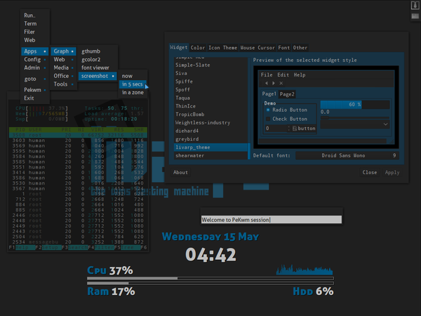

lang fr|gb

the pekwm session
PeKwm is a window manager for X developped by Claes Nästèn. extremly configurable, based on aewm++, pekwm proposes tab navigation, keybinds & keychains, editable menu, autoproperties for clients... all in differents configuration files .. many files :D
screenshot
{kind=link}
startup
pekwm is launched by the ~/bin/start/pekwm_start.sh script.
to change your startup applications, simply edit this file:
components
pekwm has many features, but i've added conky fbpanel and lxpanel as tasklist (icons-only), on top-right corner of your screen (configurable from lxpanel itself with a right-click:add/delete applets).
configuration
to configure conky, simply edit its conkyrc:
lxpanel, has its own configuration editor in graphic mode. right-click on panel to enable lxpanel configuration. for more info, visit lxpanel dedicated page.
fbpanel includes menu & systray, please visit the dedicated page.
pekwmconfiguration
you can configure pekwm by editing its configuration files available in ~/.pekwm/*
- ~/.pekwm/start: here you can add applications to be launched on pekwm startup. note that it also gets re-run every time pekwm is restarted. so, you may add startup apps in your ~/bin/start/pekwm_start.sh if you don't want to run processes two times.
you can use it to display a random wallpaper:
#!/bin/sh
# PekWM start file
# This file is a simple shell script; It gets run on pekwm startup, after
# the theme and all config has loaded if it is set executable
# (chmod +x start).
#
# This is different from ~/.xinitrc because a normal configuration of
# .xinitrc you'll run all commands, then launch the window manager last.
#
# It also gets re-run every time pekwm is restarted.
#
# As for it's usefulness, well, it's up to you. I actually set my background
# from my start file; since it runs after the theme gets loaded, this
# effectively overrides whatever's in the theme.
#
# There's probably a few other good uses for it, too. I mainly pushed for it
# because when I was doing fluxbox's docs, people used to complain that there
# wasn't one, and I wanted to avoid that for pekwm. ;) --eyez
# random wallpaper script #
# depends on feh '# apt-get install feh' #
find [adresse_du_dossier] -type f -name '*.jpg' -o -name '*.png' | shuf -n 1 | xargs feh --no-xinerama --bg-scale &
- ~/.pekwm/config: the main pekwm configuration file. here you can define default files, number and names of workspaces, windows properties, pekwm launcher configuration...
general syntax and accepted options:
## path of pekwm files##
## Path could be relative or absolute
Files {
Keys = "~/.pekwm/keys"
Mouse = "~/.pekwm/mouse"
Menu = "~/.pekwm/menu"
Start = "~/.pekwm/start"
AutoProps = "~/.pekwm/autoproperties"
Theme = "/usr/share/pekwm/themes/default"
Icons = "~/.pekwm/icons/"
}
## window move/resize ##
MoveResize {
EdgeAttract distance from screen edge required for the window to snap against it
EdgeResist distance from screen edge required for the window moving to start being resisted
WindowAttract distance from other clients that a window will snap against them to in pixels
WindowResist The distance from other clients that a window movement will start being resisted
OpaqueMove If true, turns on opaque Moving
OpaqueResize If true, turns on opaque Resizing
}
## propriétés des bureaux
Screen {
Workspaces Number of workspaces enabled
WorkspacesPerRow Number of workspaces on each row. 0=all workspaces on a single row
WorkspaceNames List of names for workspaces separated by ;
ShowFrameList display a list of all available frames on the workspace
ShowStatusWindow display a size/position info window when moving or resizing
ShowStatusWindowCenteredOnRoot display a center/size/position info window
ShowClientID Should Client IDs be displayed in window
ShowWorkspaceIndicator Show WorkspaceIndicator for N milliseconds
PlaceNew place the client, if False, open on top-left corner
FocusNew Toggles if new windows should be focused when they pop up
TrimTitle This string contains what pekwm uses to trim down overlong window titles
FullscreenAbove Toggles restacking of windows when going to and from fullscreen mode
FullscreenDetect detect screen when fullsecreen is called
HonourRandr Toggles reading of XRANDR information
HonourAspectRatio Toggles if pekwm respects the aspect ratio of clients
EdgeSize How many pixels from the edge of the screen should screen edges be
EdgeIndent Toggles if the screen edge should be reserved space
PixmapCacheSize Determines how many unused pixmaps are stored on the image cache
DoubleClickTime Time, in milliseconds, between clicks to be counted as a doubleclick
## Placement-subsection
## Model (string):
## Smart: Tries to place windows where no other window is present
## MouseCentered: Places the center of the window underneath the mouse pointer position
## MouseTopLeft: Places the top-left corner of the window under the pointer
## MouseNotUnder: Places windows on screen corners avoiding the mouse cursor position
## CenteredOnParent: Places transient windows at center of their parent window
Placement {
Model = "CenteredOnParent Smart MouseNotUnder"
Smart {
Row Whether to use row or column placement, if true, uses row
TopToBottom If false, the window is placed starting from the bottom
LeftToRight If false, the window is placed starting from the right
OffsetX Pixels to leave between new and old windows and screen edges
OffsetY Pixels to leave between new and old windows and screen edges
}
}
## define if a window should have a unique name in the window list
## if true, name will be followed by a number
UniqueNames {
SetUnique Decides if the feature is used or not
Pre String to place before the unique client number
Post String to place after the unique client number
}
}
## menu configuration
Menu {
DisplayIcons display icons in menu
Icons = "DEFAULT" { ## icon size of the "DEFAULT" menu
Minimum = "16x16"
Maximum = "16x16"
}
# different icon size depending on menus
# Icons = "Wallpaper" {
# Minimum = "64x64"
# Maximum = "64x64"
# }
# Definition of the behavior of the mouse on menu items:
# values: "ButtonPress ButtonRelease DoubleClick Motion"
Select = "Motion MotionPressed" ## selection on hover
Enter = "MotionPressed ButtonPress" ## enter on click
# Enter = "Motion" ## enter on hover
Exec = "ButtonRelease" ## execute when release
}
## command dialog configuration
CmdDialog {
HistoryUnique avoid repetition in history
HistorySize history size
HistoryFile history record file
HistorySaveInterval history interval record
}
## harbour configuration
Harbour {
OnTop Whether or not the harbour is "always on top"
MaximizeOver Controls whether maximized clients will cover the harbour
Placement position
Orientation orientation
Head screen
## dockapps configuration
DockApp {
SideMin minimal size
SideMax maximal size 0=unlimited
}
}
- ~/.pekwm/keys: keybinds/mousebinds/keychains configuration file. pekwm supports keychanins to enable second keybind level.
take care to not produce duplicated entries whem modify. note: comment/disable uneeded entries before editing.
as pekwm files are in english, this file is pretty easy to understand (french doc is longer :) )
livarp pekwm shortcuts available on bottom of this page
- ~/.pekwm/mouse: mouse action on wondows, menus..
## values ## ButtonPress: a simple click ButtonRelease: command executed on click release DoubleClick: double-click Motion: Clicking, holding, and Dragging Enter: how to act when mouse pointer enters an action place Leave: how to act when mouse pointer leaves an action place EnterMoving: Defines how to act when a dragged window enters a ScreenEdge ## boutons ## 1: left click 2: middle click 3: right click 4: scroll up 5: scroll down ## basic actions ## Focus: give focus Raise: put client above others ActivateClient: activate the client in a client group Move: move client Resize: resize client Close: close client
- ~/.pekwm/vars: you may have noticed the ' INCLUDE = "vars" ' line on top of some pekwm files. that's what this file is about. it includes your prefered regular apps. here is an example:
$TERM="urxvtc" $FILER="urxvtc -name filer -e ranger" $GFILER="rox-filer" $WEB="uzbl http://start.arpinux.org" $GWEB="firefox" $EDIT="urxvtc -name editor -e vim" $GEDIT="geany" $ZIK="urxvtc -name player -e mocp -T transparent-background" $VOL="urxvtc -e alsamixer" $JAB="urxvtc -e mcabber"
- ~/.pekwm/menu: The root menu is what you get when you left-click on the root window (also called the desktop). You can also configure the window menu, which you get when you right-click on a window title.
As previously indicated, the root and window menus follow the rules defined in Common Syntax. There aren't many possible options, and they're all either within the main menu, or within a submenu. This is all handled by a single file.
# Menu config for pekwm
# Variables
INCLUDE = "vars"
RootMenu = "Pekwm" {
Entry = "terminal" { Actions = "Exec $TERM &" }
Entry = "execute.." { Actions = "ShowCmdDialog" }
Separator {}
Submenu = "goto..." {
SubMenu = "workspace" {
COMMAND = "/usr/share/pekwm/scripts/pekwm_ws_menu.sh send"
}
Entry = "client.." { Actions = "ShowMenu GotoClient True" }
}
Submenu = "Pekwm" {
Submenu = "themes" {
Entry { Actions = "Dynamic /usr/share/pekwm/scripts/pekwm_themeset.sh /usr/share/pekwm/themes" }
Entry { Actions = "Dynamic /usr/share/pekwm/scripts/pekwm_themeset.sh ~/.pekwm/themes" }
}
Entry = "reload" { Actions = "Reload" }
Entry = "restart" { Actions = "Restart" }
Entry = "quit" { Actions = "Exit" }
}
Separator {}
INCLUDE = "debian-menu"
}
WindowMenu = "window menu" {
Entry = "toggle sticky" { Actions = "Toggle Sticky" }
Entry = "toggle shaded" { Actions = "Toggle Shaded" }
Entry = "iconified " { Actions = "Set Iconified" }
Entry = "command.." { Actions = "ShowCmdDialog" }
Submenu = "maximisation" {
Entry = "full" { Actions = "Toggle Maximized True True" }
Entry = "horizontal" { Actions = "Toggle Maximized True False" }
Entry = "vertical" { Actions = "Toggle Maximized False True" }
}
Submenu = "fill free space" {
Entry = "full" { Actions = "MaxFill True True" }
Entry = "horizontal" { Actions = "MaxFill True False" }
Entry = "vertical" { Actions = "MaxFill False True" }
}
Submenu = "placement" {
Entry = "raise client " { Actions = "Raise" }
Entry = "lower client" { Actions = "Lower" }
Entry = "always on top" { Actions = "Toggle AlwaysOnTop" }
Entry = "always below" { Actions = "Toggle AlwaysBelow" }
}
Submenu = "decorations" {
Entry = "toggle decorations" { Actions = "Toggle DecorBorder; Toggle DecorTitlebar" }
Entry = "toggle borders" { Actions = "Toggle DecorBorder" }
Entry = "toggle titlebar" { Actions = "Toggle DecorTitlebar" }
}
Submenu = "Skip" {
Entry = "Menus" { Actions = "Toggle Skip Menus" }
Entry = "Focus Toggle" { Actions = "Toggle Skip FocusToggle" }
Entry = "Snap" { Actions = "Toggle Skip Snap" }
}
SubMenu = "sendto..." {
COMMAND = "/usr/share/pekwm/scripts/pekwm_ws_menu.sh send"
}
Separator {}
Entry = "close" { Actions = "Close" }
Submenu = "kill" { Entry = "Kill application" { Actions = "Kill" } }
}
- ~/.pekwm/autoproperties: aka the rules files: defines some specific properties for your applications. this file is well commented and easy to understand as it's in english (the french doc is longer :) )
- ~/.pekwm/themes ,/scripts, /icons
- the ~/.pekwm/themes directory includes downloaded/created themes if ou want them to be detected/used by pekwm
- the ~/.pekwm/scripts directory includes scripts used by pekwm dynamics menus
- the ~/.pekwm/icons directory includes icons used by pekwm themes
keybinds/mousebinds
configured by the ~/.pekwm/keys file, here are the livarp pekwm session shortcuts:
menus:
- fbpanel menu: available on top-left corner of your screen
- pekwm menu: right-click on desktop or Super+R
- hide menus: Super+x
- dmenu: Alt+d
- run command dialog: Super+d
control:
windows:
- close client: Super+q
- shade client: Super+s
- iconify client: Super+i
- prev/next client: Alt(+Shift)+Tab
- prev/next client-group: Ctrl+Alt(+Shift)+Tab
- prev/next tabbed client: Super(+Shift)+Tab
- maximize: Super+m
- fullscreen: Super+f
- move: Alt+clic-gauche
- resize: Alt+clic-droit
navigation:
- prev/next workspace: Ctrl+Alt+Left/Right
- workspace 'n': Super+'n'
- sendto workspace 'n': Super+F'n'
- sendto & goto prev/next workspace: Ctrl+Alt+Shift+Left/Right
launchers:
- default terminal: Ctrl+Enter or Super+e
- launch ranger: Alt+r
- launch rox-filer: Alt+Shift+r
- launch firefox: Alt+w
- launch vim: Alt+e
- launch geany: Alt+Shift+e
- music player: Alt+z
- volume control: Alt+v
keychains:
allows you to enable a second keybind level with a first keybind. complete list available in the ~/.pekwm/keys file: section "CHAINS".